10.1 หลักการทำงานของระบบเช็กชื่อ#
ก่อนลงมือ ท่านควรทราบภาพรวมนี้ก่อน เพราะเป็นที่มาของการตั้งค่าทุกจุดในบทนี้ ระบบเช็กชื่อทำงานเป็น "รอบ" (Session) กล่าวคือ ท่านเปิดรอบหนึ่งรอบต่อหนึ่งคาบเรียน ภายในรอบนั้นระบบจะสร้าง PIN 6 หลักและ QR Code ให้นักศึกษายืนยันตัวตนผ่านมือถือของตนเอง แทนการขานชื่อ โดยมีกลไกป้องกันการฝากเพื่อนเช็กชื่อ 2 ชั้น ได้แก่ การหมุน PIN ใหม่เป็นระยะ (ทำให้ PIN ที่ถ่ายรูปส่งต่อกันใช้ไม่ได้อีกในเวลาไม่นาน) และการตรวจตำแหน่ง GPS แบบเลือกใช้ได้ (บังคับให้ต้องอยู่ในรัศมีห้องเรียนจริง)
อาจารย์เลือกได้ว่าจะให้ PIN หมุนใหม่เป็นระยะ (ค่าเริ่มต้น) หรือคงที่ตลอดรอบ กรุณาฉายหน้าจอ PIN/QR ให้นักศึกษาเห็นตลอดช่วงรับเช็กชื่อ ไม่ใช่ฉายเพียงครั้งเดียวตอนต้นคาบ
การหมุน PIN มีตัวแปรควบคุมสองจุดที่แยกกัน ได้แก่ สวิตช์ต่อรอบที่อาจารย์ตั้งตอนสร้างรอบ กับสวิตช์ระดับระบบที่ผู้ดูแลระบบควบคุม หากผู้ดูแลระบบปิดการหมุนไว้ทั้งระบบ PIN จะไม่หมุนแม้อาจารย์เปิดสวิตช์ต่อรอบไว้ก็ตาม หากพบว่า PIN ไม่หมุนตามที่ตั้งไว้ ให้ตรวจสอบกับผู้ดูแลระบบ
10.2 ขั้นตอนที่ 1 · เปิดหน้าจัดการเช็กชื่อ#
เป้าหมายของขั้นตอนนี้ เข้าสู่หน้ารายการรอบเช็กชื่อของรายวิชา ซึ่งเป็นจุดเริ่มต้นของทุกการทำงานในบทนี้
- ที่แถบเมนูด้านซ้ายของรายวิชา คลิก จัดการการเช็กชื่อ เพื่อขยายเมนูย่อย
- คลิกเมนูย่อย เช็กชื่อ
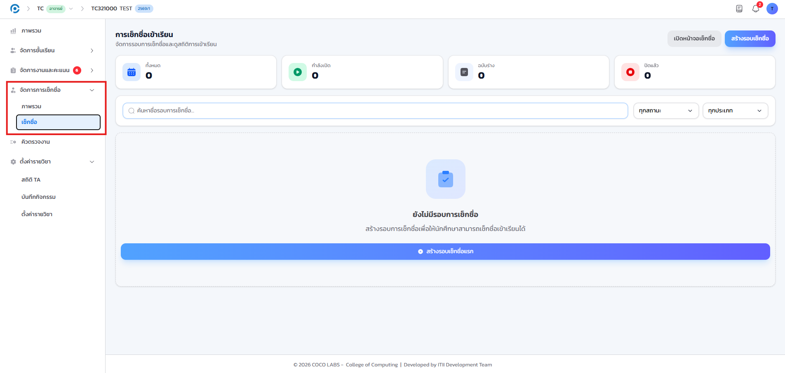
หน้าจอเปลี่ยนเป็น "การเช็กชื่อเข้าเรียน" แสดงปุ่ม สร้างรอบเช็กชื่อ มุมขวาบน และตารางรายการรอบทั้งหมดของวิชา หากยังไม่เคยสร้างรอบ ตารางจะว่างเปล่า ซึ่งเป็นเรื่องปกติ
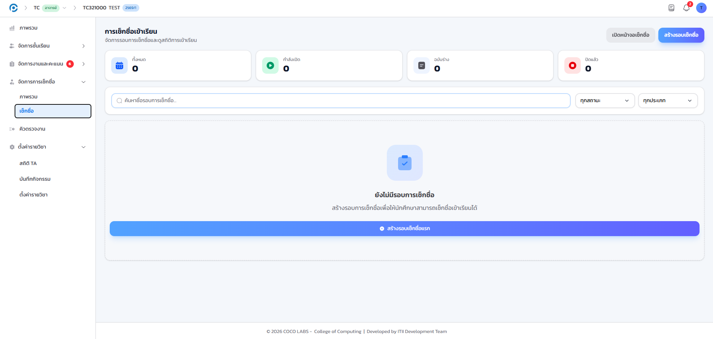
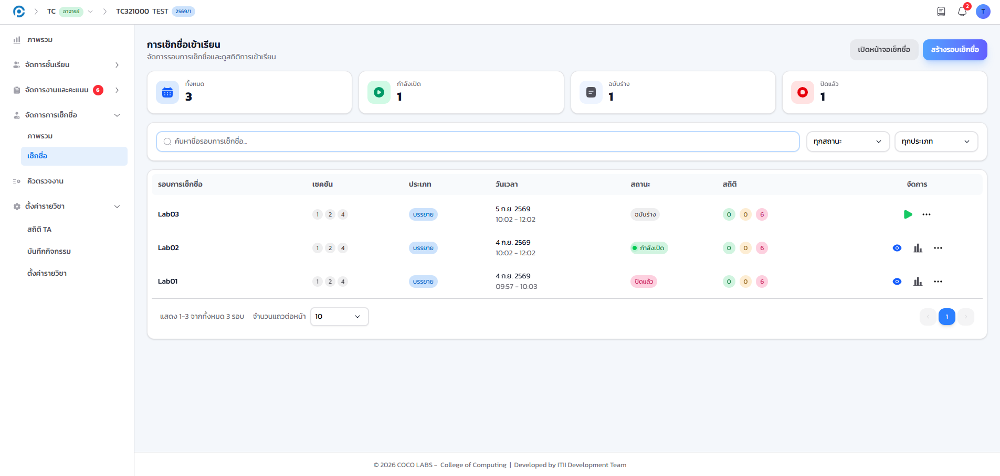
- แถบสรุปจำนวนรอบ
- นับจำนวนรอบทั้งหมด แยกตามสถานะ กำลังเปิด ฉบับร่าง และปิดแล้ว
- ไอคอน "ดู"
- เปิดหน้าจอเช็กชื่อสดของรอบนั้น สำหรับใช้ระหว่างคาบ
- ไอคอน "สถิติ"
- เปิดหน้าสรุปผลของรอบนั้น ใช้หลังปิดรอบแล้ว
- เมนูจุดสามจุด
- แก้ไขการตั้งค่า หรือลบรอบที่ยังไม่ต้องการ
10.3 ขั้นตอนที่ 2 · สร้างรอบเช็กชื่อ#
เป้าหมายของขั้นตอนนี้ กำหนดช่วงเวลาและเงื่อนไขของรอบเช็กชื่อประจำคาบนี้ ก่อนเริ่มรับเช็กชื่อจริง
- คลิกปุ่ม สร้างรอบเช็กชื่อ ระบบจะเปิดหน้าต่างแบบฟอร์ม
- กรอกรายละเอียดตามหัวข้อด้านล่าง แล้วคลิก สร้างรอบเช็กชื่อ อีกครั้งเพื่อยืนยัน
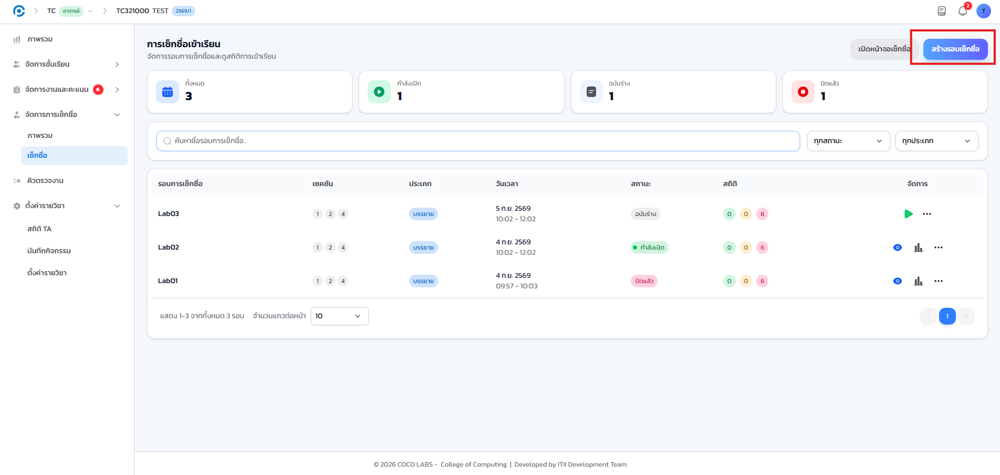
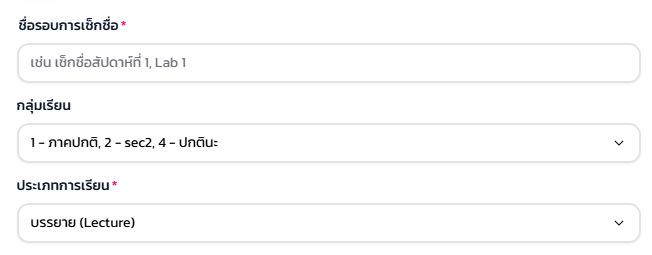
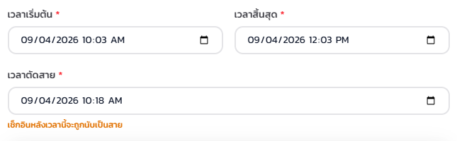
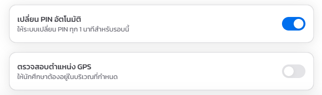
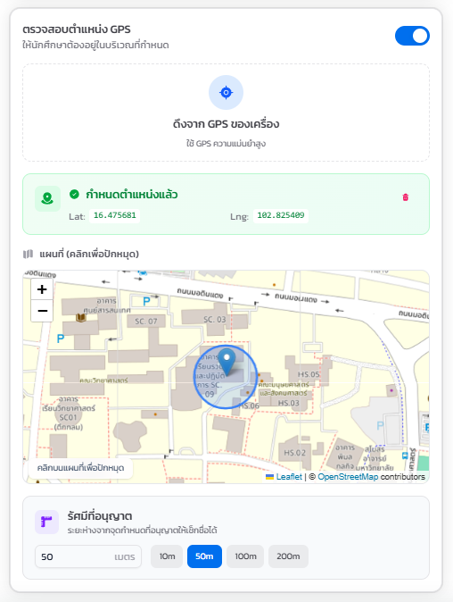
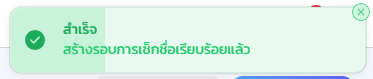
ระบบแจ้งเตือนสร้างรอบสำเร็จ และรอบใหม่ปรากฏบนสุดของตาราง พร้อมสถานะ กำลังเปิด หากสถานะขึ้นเป็น ฉบับร่าง แทน แสดงว่าเวลาเริ่มที่กรอกไว้ยังไม่ถึง ให้ตรวจสอบเวลาเริ่มอีกครั้ง
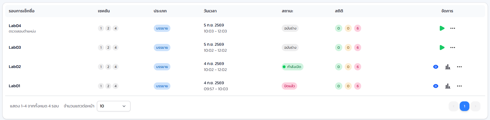
10.4 ขั้นตอนที่ 3 · ฉาย PIN และ QR ให้นักศึกษา#
เป้าหมายของขั้นตอนนี้ เปิดหน้าจอเช็กชื่อสด สำหรับฉายขึ้นจอหน้าห้องระหว่างรับเช็กชื่อ
- ที่แถวของรอบซึ่งมีสถานะ กำลังเปิด คลิกไอคอน ดู
- ฉายหน้าต่างที่เปิดขึ้นขึ้นจอโปรเจกเตอร์หน้าห้อง แล้วปล่อยทิ้งไว้ตลอดช่วงรับเช็กชื่อ
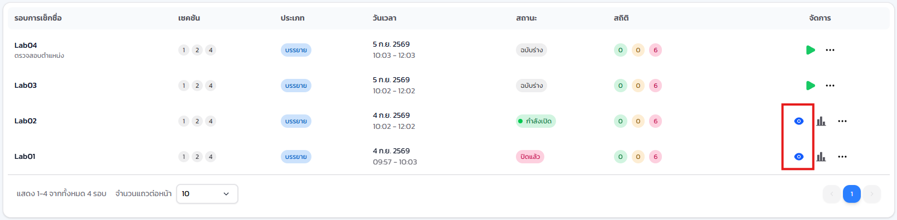
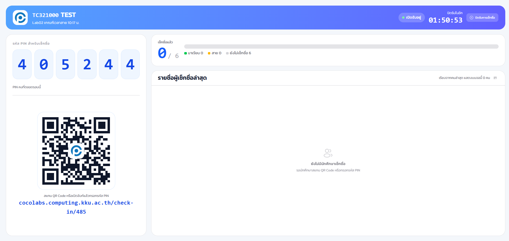
- PIN 6 หลัก
- นักศึกษากรอกในแอปฝั่งตนเอง หมุนใหม่เป็นระยะหากเปิดใช้ตามข้อ 10.3
- QR Code
- ทางเลือกแทนการกรอก PIN สแกนแล้วเข้าสู่หน้าเช็กชื่อโดยตรง
- สถิติภาพรวมแบบเรียลไทม์
- จำนวนเช็กชื่อแล้ว มา สาย ลา และขาด อัปเดตทันทีเมื่อมีคนเช็กชื่อ
- รายชื่อผู้เช็กชื่อ
- รายชื่อจะไล่เรียงขึ้นตามลำดับเวลาที่เช็กชื่อสำเร็จ
- ปุ่มปิดรับการเช็กชื่อ
- ใช้ในขั้นตอนที่ 10.5 เมื่อหมดเวลารับเช็กชื่อ
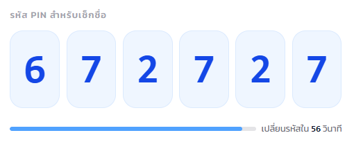
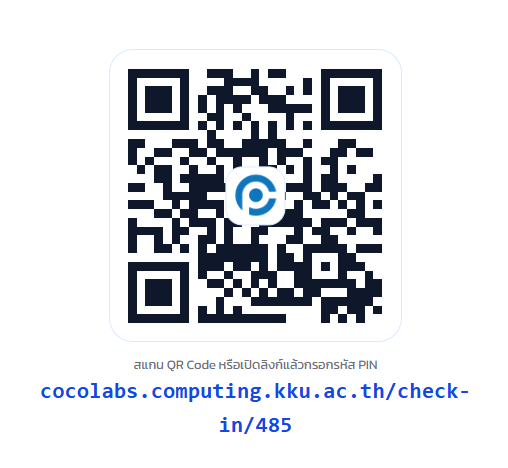
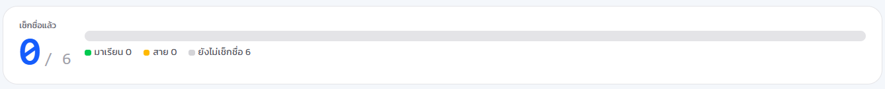
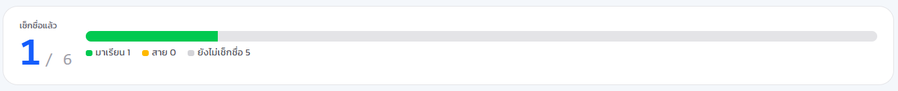
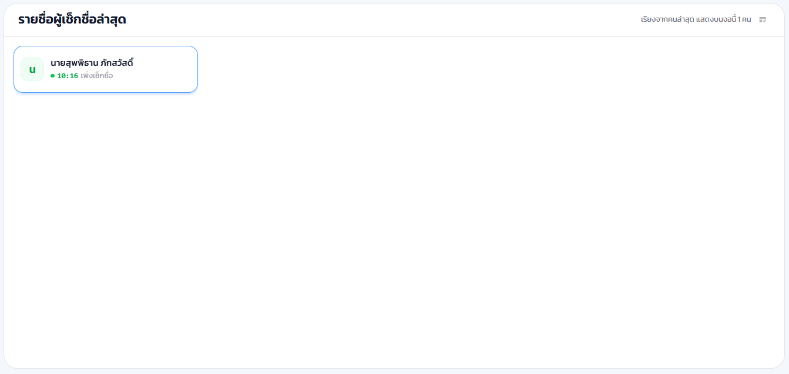
ปิดหน้าต่างนี้ก่อนหมดเวลา รอบยังไม่ปิดโดยอัตโนมัติ นักศึกษายังเช็กชื่อผ่านมือถือได้ตามปกติจนกว่าท่านจะกด "ปิดรับการเช็กชื่อ" ด้วยตนเอง
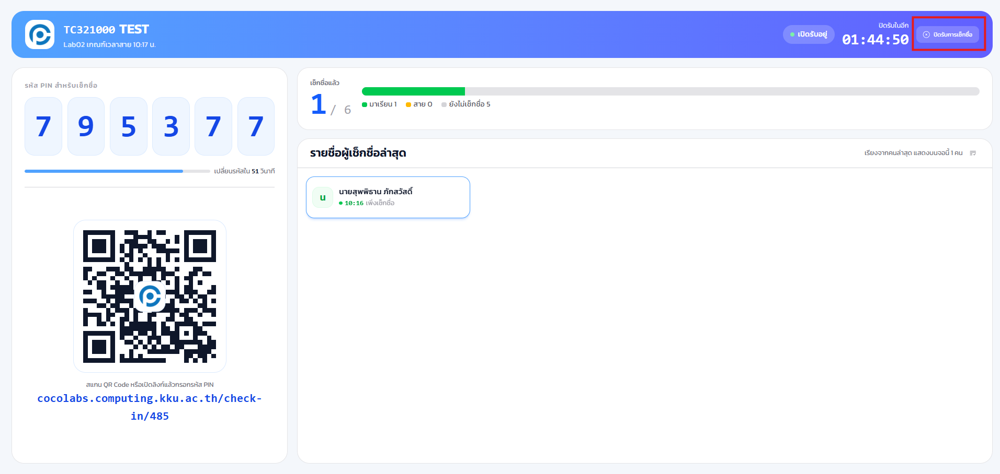
10.5 ขั้นตอนที่ 4 · ปิดรอบและอ่านผลสรุป#
เป้าหมายของขั้นตอนนี้ หยุดรับเช็กชื่อเมื่อหมดเวลา แล้วเปิดดูผลสรุปของคาบนี้
- บนหน้าจอเช็กชื่อสด คลิก ปิดรับการเช็กชื่อ
- กลับไปที่หน้ารายการรอบ แล้วคลิกไอคอน สถิติ ที่แถวของรอบนี้
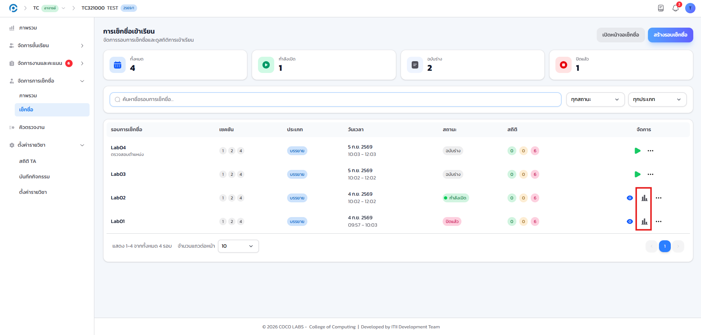
- ยอดรวมตามสถานะ
- จำนวนทั้งหมด มา สาย ลา และขาด ของรอบนี้
- อัตราการเข้าเรียน
- คำนวณเป็นเปอร์เซ็นต์จากจำนวนมาและสาย เทียบกับยอดรวม
- ตารางรายบุคคล
- สถานะและเวลาที่เช็กชื่อของนักศึกษาแต่ละคน เรียงตามชื่อ
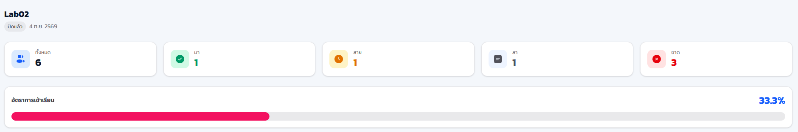
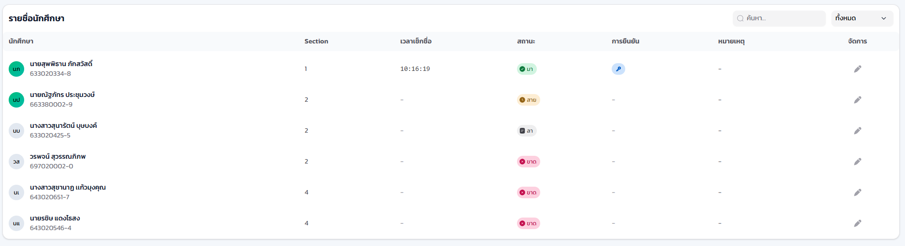
10.6 แก้ไขสถานะย้อนหลัง#
เป้าหมายของขั้นตอนนี้ ปรับสถานะให้ตรงความจริง เมื่อมีเหตุสุดวิสัยหรือระบบบันทึกคลาดเคลื่อน
- ที่หน้าสรุปผล คลิกปุ่มแก้ไขท้ายแถวของนักศึกษาที่ต้องการ
- เลือกสถานะใหม่ มา สาย ลา หรือขาด
- กรอกหมายเหตุอธิบายเหตุผลของการแก้ไข
- คลิก บันทึก ระบบจะปรับยอดรวมและอัตราการเข้าเรียนให้อัตโนมัติ
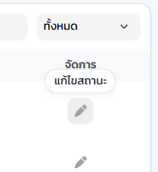
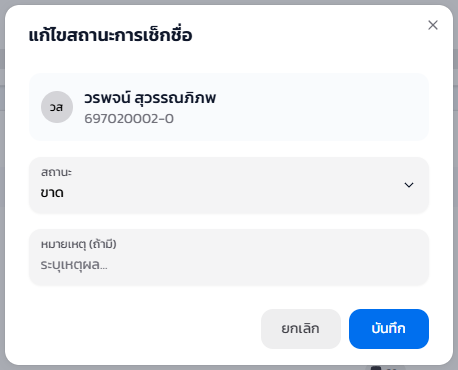
สถานะของนักศึกษาคนนั้นเปลี่ยนทันทีในตาราง และตัวเลขยอดรวมด้านบนปรับตามโดยไม่ต้องโหลดหน้าใหม่ หมายเหตุที่กรอกไว้จะย้อนดูได้ภายหลังจากประวัติการแก้ไข
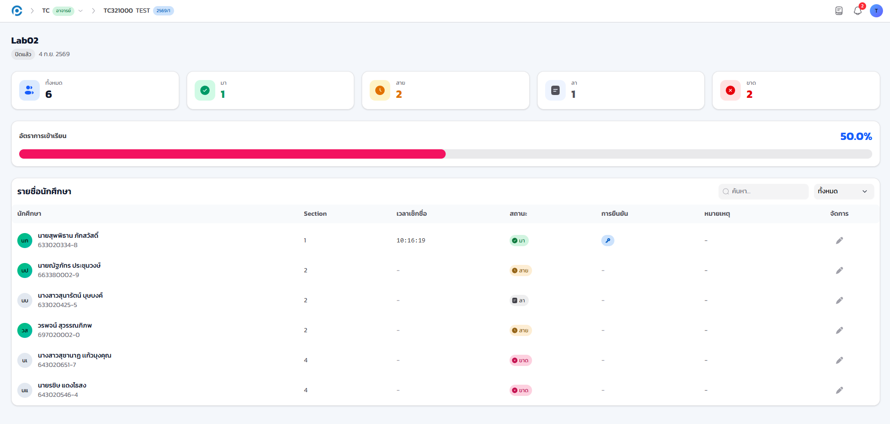
10.7 มุมมองฝั่งนักศึกษา#
เป้าหมายของขั้นตอนนี้ เข้าใจสิ่งที่นักศึกษาเห็นระหว่างเช็กชื่อ เพื่อช่วยตอบคำถามหน้างานได้ทันที
นักศึกษาเข้าสู่ระบบในแอปฝั่งตนเองด้วยบัญชี KKU Mail ผ่าน KKU SSO แล้วเช็กชื่อได้สองทาง คือกรอก PIN หรือสแกน QR ที่ฉายอยู่หน้าห้อง
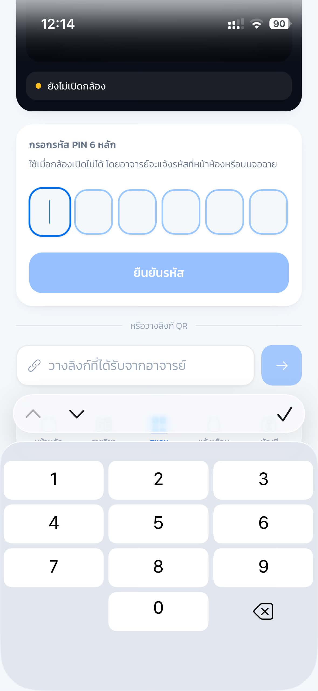
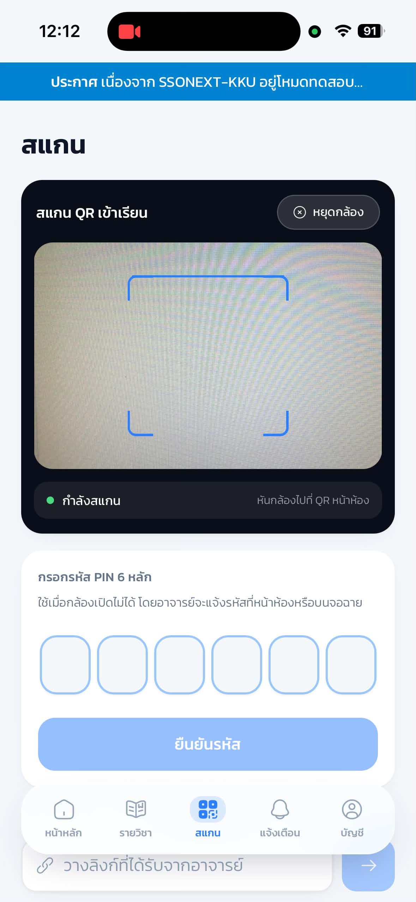
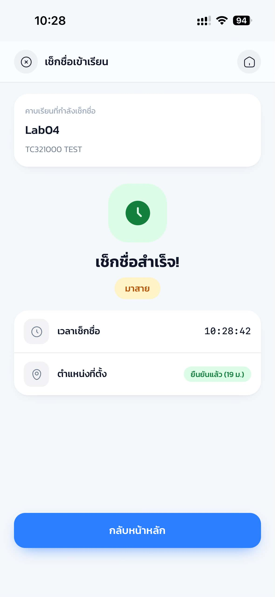
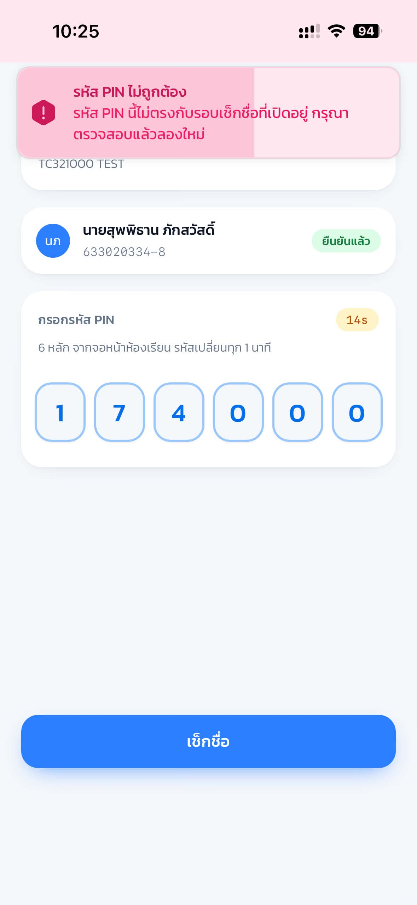
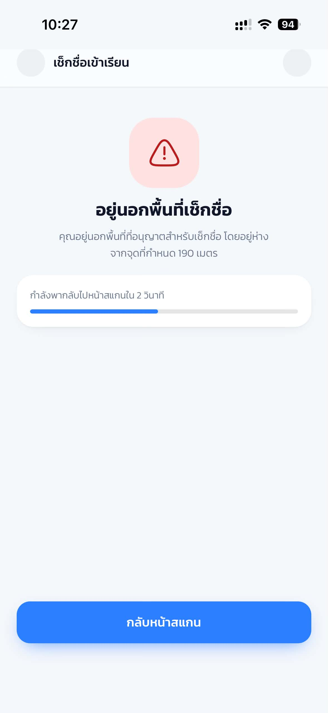